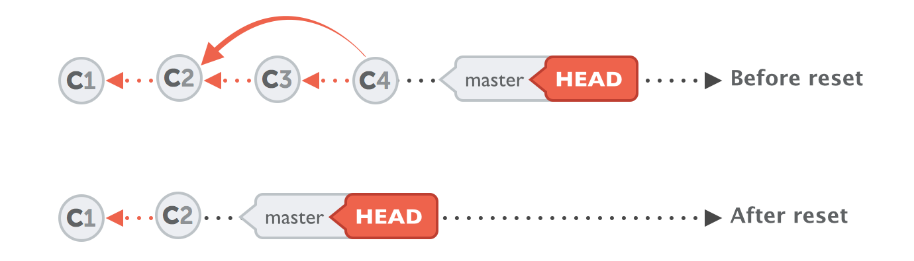

Git Essentials¶
A very good reference that is thorough yet light is https://www.atlassian.com/git/glossary#commands.
Git commands I use most frequently in my work.
Clone a repo¶
Rename a branch¶
Checkout a remote branch¶
Clear git cache¶
Delete local branch¶
Delete remote branch¶
List remote origin¶
Change url of remote origin¶
Delete remote origin¶
Add a remote origin¶
Edit previous commit message¶
- opens up git editor.List checkouts one line¶
Go back to a previous commit¶
Reset will rewind your current HEAD branch to the specified revision. In our example above, we'd like to return to the one before the current revision - effectively making our last commit undone.Note the --soft flag: this makes sure that the changes in undone revisions are preserved. After running the command, you'll find the changes as uncommitted local modifications in your working copy.
If you don't want to keep these changes, simply use the --hard flag. Be sure to only do this when you're sure you don't need these changes anymore.
Go back to the previous commit (hard)¶
Go back to a particular commit¶
